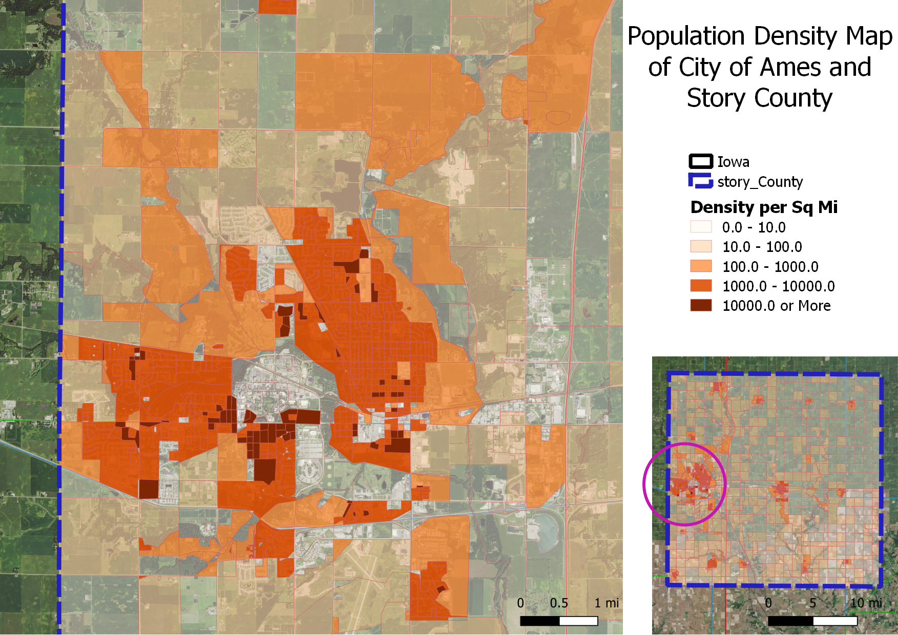

Exercise 3: Introduction to QGIS
Basic Map-making
QGIS is a free and open-source GIS and map-making software, equivalent to ESRI's ArcGIS and ArcMap. Below is a basic map of Iowa and different types highway system throughout the state. The map also includes a shapefile layer of Story County, which various kinds of information for further analysis.

The zoom-in map below shows population density per square mile of Story County, as well as the City of Ames.

Credits
Map Data and Shapefile: ISU GIS Facility
Map Drawn by: Panhavuth Sar
Date: 02/08/2019